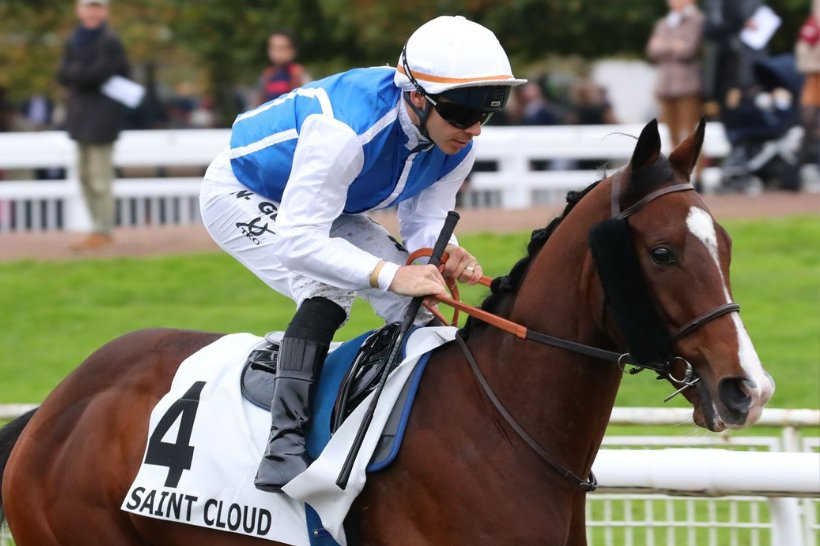

Double Major se despide en el Prix Royal-Oak, la cumbre de Saint-Cloud
Saint-Cloud reúne el domingo los tres últimos Grupos 1 de la temporada francesa. En el Prix Royal-Oak, Double Major, doble ganador de la prueba, correrá su última carrera.

El adiós de Double Major tiene fecha y escenario. El caballo, de 6 años, disputará el Prix Royal-Oak (Grupo I), un maratón de 3.100 metros para ejemplares de 3 años en adelante, y después pasará a la reproducción. Ganó la prueba en 2023 y en 2024, así que se despide en una carrera que ya conoce por dentro.
La reunión tiene ocho carreras: tres de Grupo I y tres de Grupo III. Los dos primeros Grupos I son para la generación joven.
El Critérium International (Grupo I) abre el cartel sobre 1.600 metros para ejemplares de 2 años. Habrá siete potros en los cajones: dos entrenados en Francia, tres en Inglaterra y dos en Irlanda. Los franceses llegan con una cuenta pendiente, porque no ganan esta prueba desde 2013.
Algo más de una hora después llega el Critérium de Saint-Cloud (Grupo I), sobre 2.000 metros, también con siete participantes. Entre ellos solo hay una potranca, y es francesa: Just Yet. Su entorno pagó 18.000 € de suplemento para inscribirla. Tendrá enfrente a machos ya curtidos, entrenados al otro lado del Canal de la Mancha.
Al cierre del cartel, Double Major buscará despedirse con su tercer Prix Royal-Oak.
Por Martín Larrañeta